Способности к математике позволили мне учавствовать в олимпиадах Республиканского и Международного уровней. Моими любимыми предметами являлись геометрия, черчение, глобальные перспективы и экономика.
Президент школы
За год управления школьным перламентом мне удалось научиться эффективно делегировать, и сформировать новую модель самоуправления, выработав трехгодовую стратегию.
Операторство
В 2014 году я победил в ежегодном школьном фестивале фильмов в номинации "Лучший оператор". Вне школы я также снимал свои собственные короткометражные фильмы.
Дебаты
Присущий профессиональным дебатам глубокий анализ актуальных проблем происходящих в мире привек моё внимание. В 2015 году я стал 7 лучшим дебатером среди студентов области.
КВН
Крутые парни состояли в школьном КВН. В 9 классе я очень хотел стать частью банды, поэтому решил попробовать. Год спустя я сделался режиссером всего концерта.
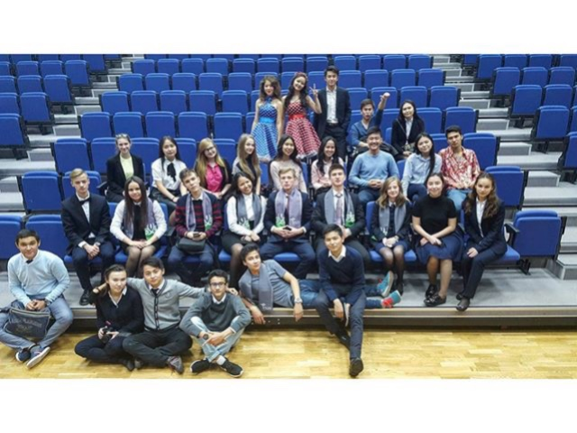
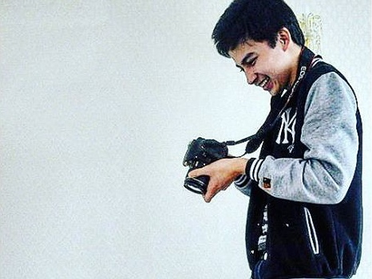
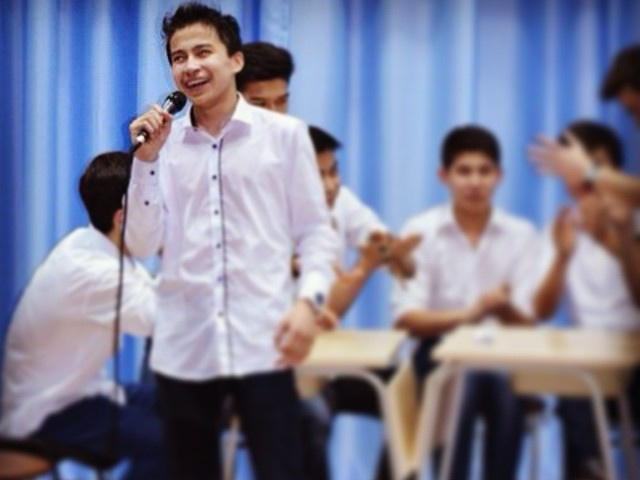
Пишу стихи на трех языках, рисую портреты
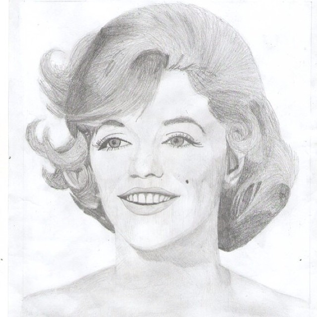
I swear and pray
To be the one,
Who chance the World,
While having fun.
Cause love and passion,
That I have,
Will strengthen me,
And help to stand.
And while I live,
I know my dream,
And brave enough to chase.
Whenever death would come to me,
Won't separate me from that dream,
Because so strongly I am embraced.
And by persistence, I believe,
You can deserve a better live.
M.B.Askarovich
(20 May, 2016)
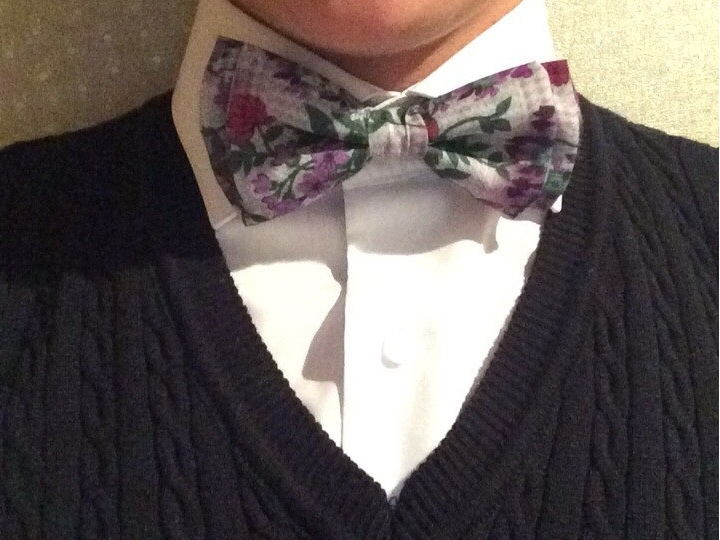
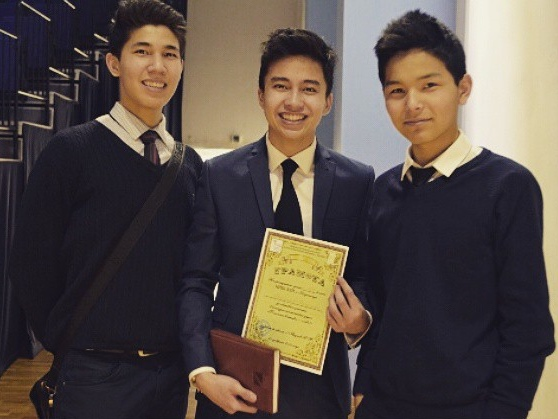
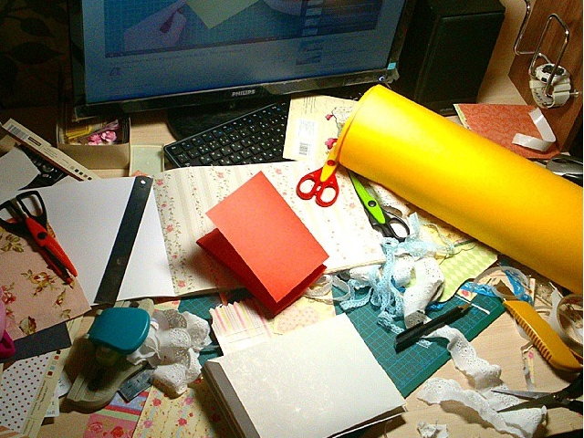
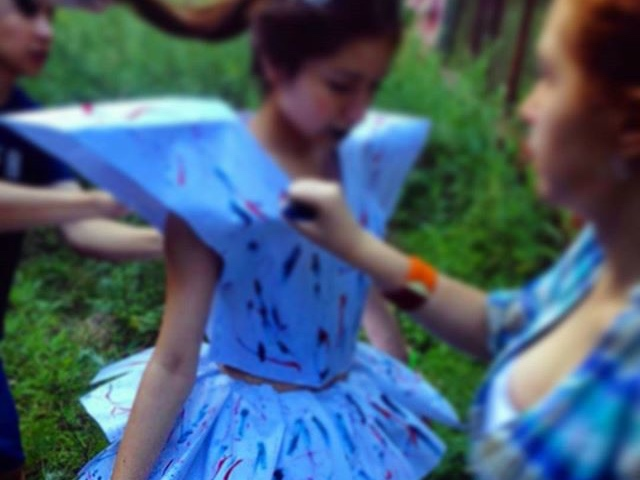
Деньги и предпринимательство
Я всегда относился к чужим деньгам особенно бережно, поэтому в деле сбора средств на мероприятие или же благотворительность, ответственность я брал на себя. Моё трудоустройство в международную корпарацию, занимающуюся фильтрами для очистки воды, является неменьшей авантюрой всем печенькам и шоколадкам, которые я умудрялся продавать в стенах родной школы на посту президента.
Работа
Батут
Дилер в Pure-Pro Water Corporation
Купи-продай
Продажа конфет в лагере
Продажа конфет в школе
Продажа выпечки с супермаркета в школе для благотворительности (x5 за пять дней)
А почему бы и нет?
Фильм "Cекрет" на меня сильно повлиял, и самое удивительное это то, что все дейсвительно начало сбываться. Загадав путешествие, атрибут роскоши, популярность и любовь до наступления 2014, я не прогадал. После полученного опыта я понял, что преграды лишь иллюзия, бытующая в головах.
Тестирование реальности
G-shock, Европа, Красавица школы, Признание школы
Встреча с миллиардерами Казахстана
Швейцария -> Швейцарцы
Макбук
Битсы
Киндл
Тестирование ниш
Аквагрим
Скрапбукинг
Аксессуары для одежды (галстуки, бабочки, декоративные платки)
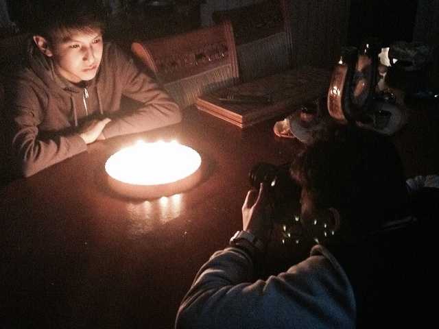
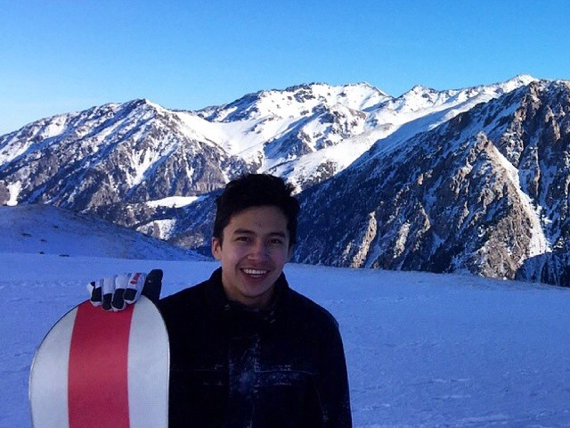
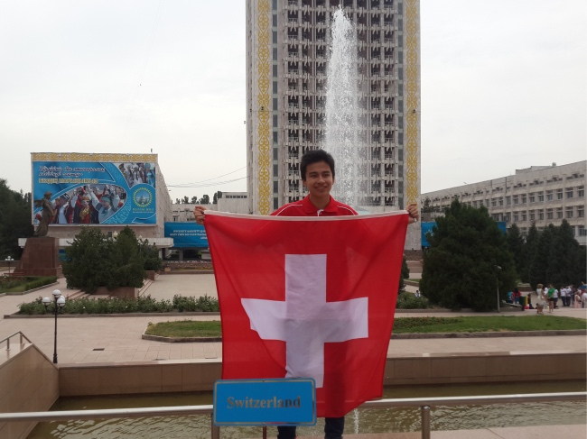
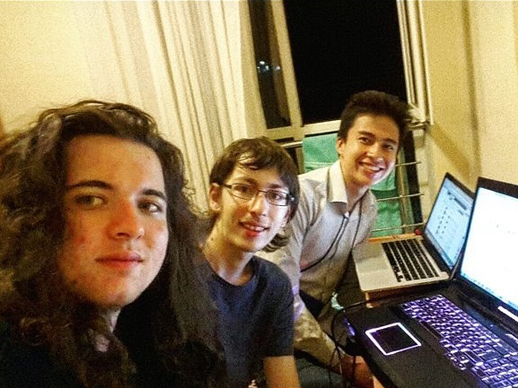
Профессиональная цель
Стать лучшим в мире SaaS разработчиком
Когда я утыкаюсь в потолок существующей концепции или методологии, я ищу и изучаю новую. Ничего так не мотивирует, как осознание того, что на рынке существует технология лучше, быстрее и элегантнее используемой в настоящий момент.